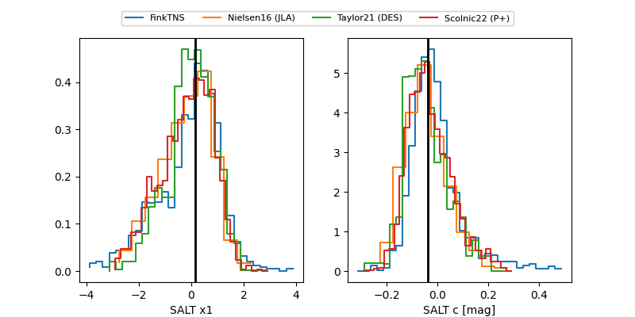

FINK: ZTF25abptfih
Lasair: ZTF25abptfih
ALeRCE: ZTF25abptfih
ZTF25abptfih (ztf,fink)
equatorial (ra, dec) = (304.8742,-22.56849)
galactic (l, b) = (20.8190,-28.88550)

last ztfg=18.70, ztfr=18.58
12 ztfg, 10 ztfr detections